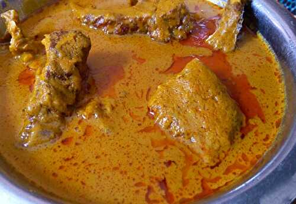

Palm Nut Sauce

Description
Palm nut sauce is a typical sauce from west Africa. It is popular in countries
such as Côte D'Ivoire, Benin, Ghana and more.
Ingredients
- 2kg of palm nut seeds
- oxtail
- cleaned crabs
- pre-cooked beef
- steamed fish
- fresh peper
- garlic
- 2 onions
- 4 tomatoes (mixed)
- salt
- palm nut spice
Steps
- put the oxtail in a saucepan. add the palm nut spice. salt. Put on fire for 30 min
meanwhile, wash the seeds and boil them for 20 to 30mn
- once the seeds are cooked, pound in a mortar. pour warm or hot water on it. wring it all,
collect the juice and filter it.
- add the nuts juice on the meat
- Let it boil for 30mn.
- mixe onions, garlic and tomatoes. Add in the sauce and let it cook well
- add the fish and crabs. Let it boil to thicken the sauce. The oil should come up at the end.
- bon appetit!